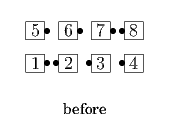
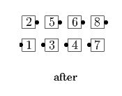
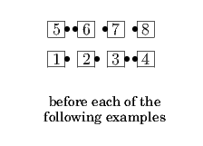
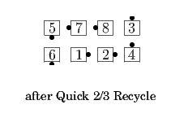
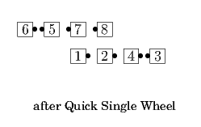
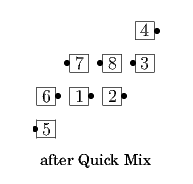

From a 1/4 Box or other applicable formations: #2 dancer Press Out and Phantom Ah So with the adjacent dancer as the Others Circulate. A 1/4 Box ends in Columns.
 
From a 1/4 Box or other applicable formations: #2 dancer Press Out and do the <anything> call with the dancer they meet (working Phantom if necessary) as the Others Circulate. Phantoms are removed at the end of the call to eliminate any empty planes between the Outsides and the Centers.
   
© Copyright 2004-2017 Vic Ceder and CALLERLAB Inc., The International Association of Square Dance Callers. Permission to reprint, republish, and create derivative works without royalty is hereby granted, provided this notice appears. Publication on the Internet of derivative works without royalty is hereby granted provided this notice appears. Permission to quote parts or all of this document without royalty is hereby granted, provided this notice is included. Information contained herein shall not be changed nor revised in any derivation or publication.